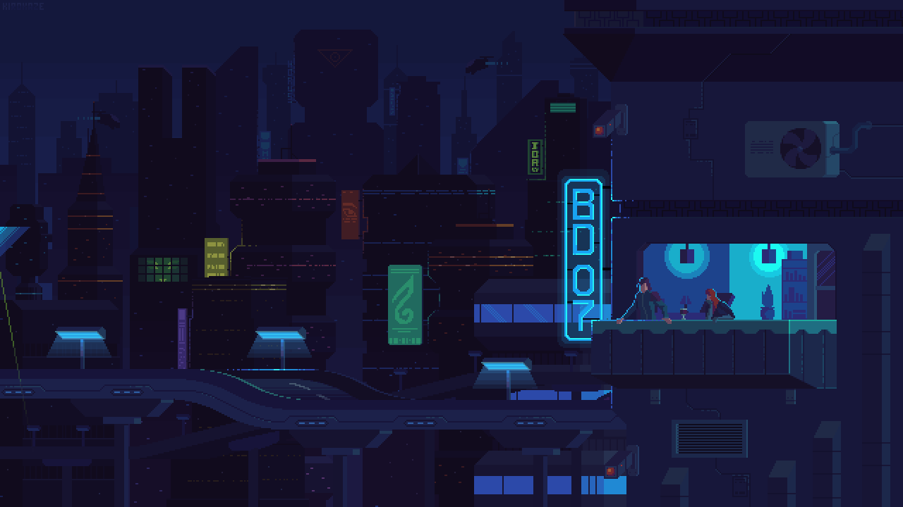

{{toggleChecked ? 'Hola': 'Hi'}}, {{ name }} {{ lastname }}
{{ toggleChecked ? 'Cerrar sesión': 'Log out'}}
{{ toggleChecked ? 'Traducir': 'Translate'}}

{{toggleChecked ? 'Hola': 'Hi'}}, {{ name }} {{ lastname }}.
{{ toggleChecked ? 'Soy Uriel un chico de 25 años apasionado por la programación que en sus tiempos libres va al gimnasio, juega en su pc. Alguien muy alegre y muy entusiasmado por seguir creciendo como persona y programador :D.'
:
'I m Uriel, a 25 years old guy passionate about programming who in his free time goes to the gym, plays on his free time he goes to the gym, plays on his pc. Someone very cheerful and very enthusiastic to keep growing as a person and programmer :D.' }}
 {{toggleChecked ? 'Tecnologías': 'Technologies '}}
{{ toggleChecked ? 'En estos casi 3 años programando he trabajado con tecnologías y lenguajes de programación como: Angular, Ionic, Firebase, Typescript, Flutter, Dart, C#, ASP.Net, Photoshop, WordPress. Me encantaría tener la oportunidad de trabajar con ustedes para seguir aprendiendo y seguir creciendo como programador :).' :
'In these almost 3 years of programming I have worked with technologies and programming languages such as: Angular languages such as: Angular, Ionic, Firebase, Typescript, Flutter, Dart, C#, ASP.Net, Photoshop, WordPress. I would love to have the opportunity to work with to work with you to keep learning and growing as a programmer :).'}}
{{toggleChecked ? 'Tecnologías': 'Technologies '}}
{{ toggleChecked ? 'En estos casi 3 años programando he trabajado con tecnologías y lenguajes de programación como: Angular, Ionic, Firebase, Typescript, Flutter, Dart, C#, ASP.Net, Photoshop, WordPress. Me encantaría tener la oportunidad de trabajar con ustedes para seguir aprendiendo y seguir creciendo como programador :).' :
'In these almost 3 years of programming I have worked with technologies and programming languages such as: Angular languages such as: Angular, Ionic, Firebase, Typescript, Flutter, Dart, C#, ASP.Net, Photoshop, WordPress. I would love to have the opportunity to work with to work with you to keep learning and growing as a programmer :).'}}